- Part A — Dynamic Programming: Foundations
- Part B — The Prediction Problem: Policy Evaluation
- Part C — Iterative Policy Evaluation: Algorithm & Examples
- Part D — Policy Improvement
- Part E — Policy Iteration & Generalized Policy Iteration
Reading: Sutton & Barto, RL: An Introduction, Ch. 4.1–4.3 | buntyke.github.io/rlcourse-mtech-fall26
The slides of this lecture are based on:
- Chapter 4 of Reinforcement Learning: An Introduction (2nd ed.) by Sutton & Barto
- Lecture 3 of Google DeepMind's 2015 lectures by David Silver
Part A — Dynamic Programming: Foundations
- Named by Richard Bellman (1957) — same Bellman as our Bellman equations
- Requires complete knowledge of the environment model \(p(s', r \mid s, a)\)
- Turns the Bellman equation into a step-by-step algorithm for finding the best policy
- DP is the foundation — all other RL methods build on its ideas
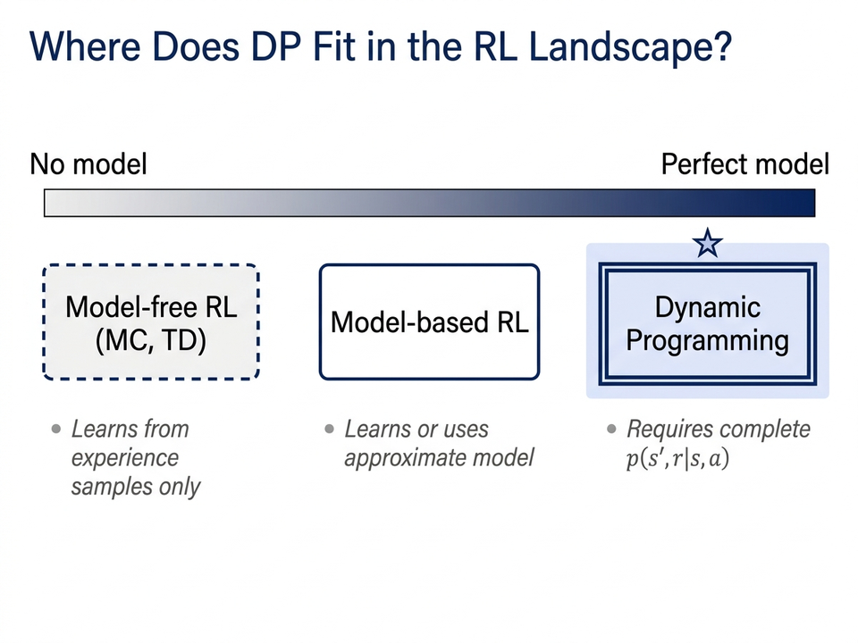
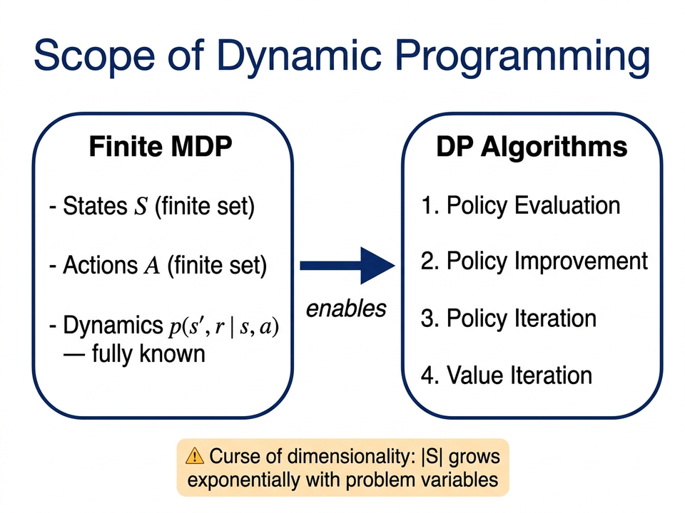
- Convergence requires \(\gamma < 1\) or eventual termination from all states
- Limitation: "curse of dimensionality" — \(|\mathcal{S}|\) grows exponentially with problem variables
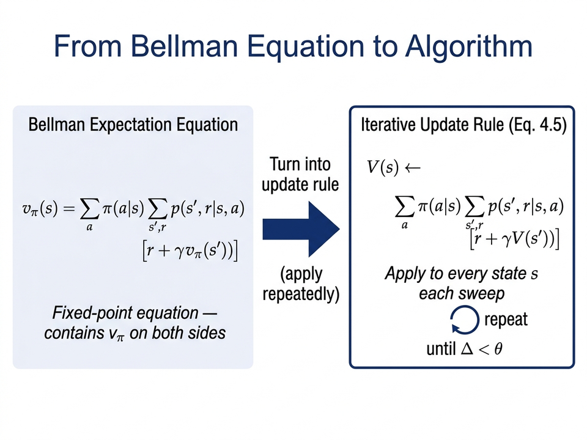
- The Bellman equation is a fixed-point equation: \(v_\pi = \mathcal{T}^\pi v_\pi\)
- DP turns it into an update rule: apply \(\mathcal{T}\) repeatedly until \(V\) stops changing
- Policy evaluation uses \(\mathcal{T}^\pi\); Value iteration uses \(\mathcal{T}^*\)
- Both operators are contractions — they always converge to the right answer
Which information does Dynamic Programming need that model-free RL methods do not use?
- A. A large set of sampled episodes from the environment
- B. A neural network to approximate the value function
- C. The complete transition model \(p(s', r \mid s, a)\) for all states and actions
- D. A replay buffer of past state–action pairs
↓ Press down to reveal the answer
Which information does Dynamic Programming need that model-free RL methods do not use?
- A. A large set of sampled episodes from the environment
- B. A neural network to approximate the value function
- C. The complete transition model \(p(s', r \mid s, a)\) for all states and actions
- D. A replay buffer of past state–action pairs
Part B — The Prediction Problem: Policy Evaluation
- Input: any policy \(\pi\) — it may be random, suboptimal, or arbitrary
- Goal: find \(v_\pi(s) = \mathbb{E}_\pi[G_t \mid S_t = s]\) for every state \(s\)
- This is the first step — we evaluate before we improve
- Once we know \(v_\pi\), we can ask: "Is there a better action to take here?"
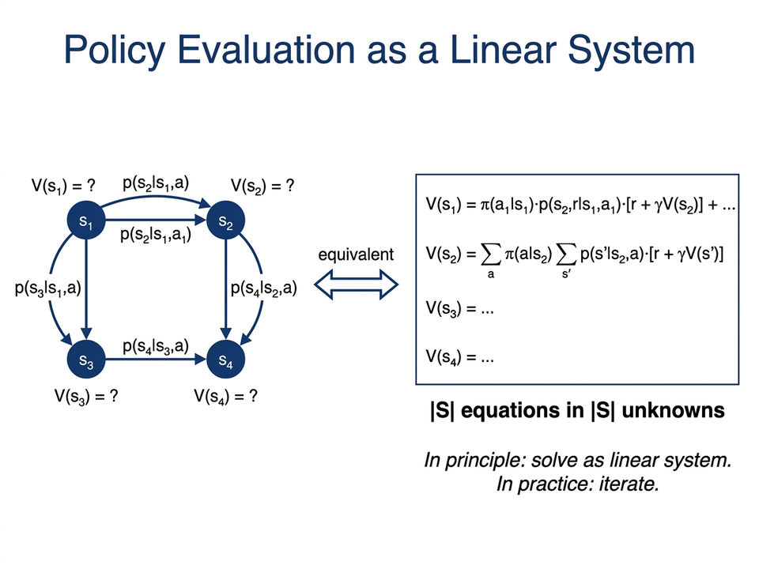
- This gives a system of \(|\mathcal{S}|\) equations with \(|\mathcal{S}|\) unknowns
- Can be solved directly — but too slow for large problems
- Iterative methods are much more practical
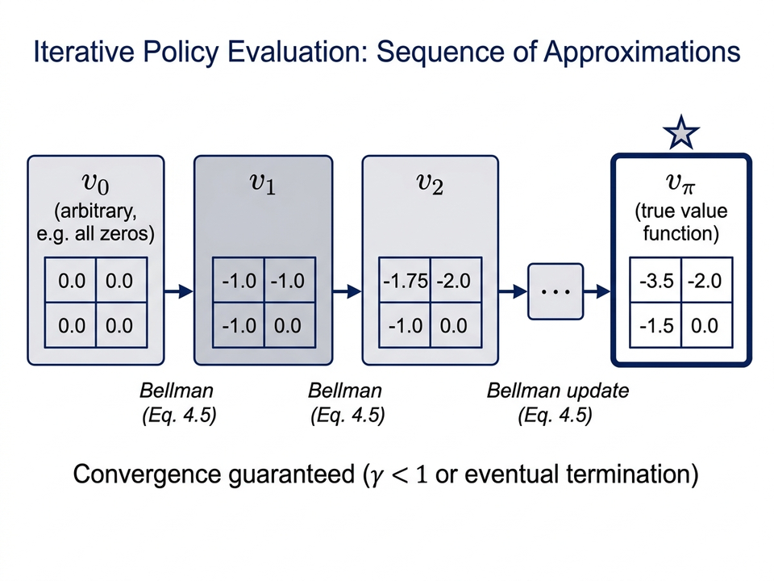
The update rule:
\[v_{k+1}(s) \doteq \sum_a \pi(a \mid s) \sum_{s',r} p(s',r \mid s,a)\Big[r + \gamma v_k(s')\Big]\]- The process always converges to the true \(v_\pi\) when \(\gamma < 1\)
- One pass through all states = one sweep
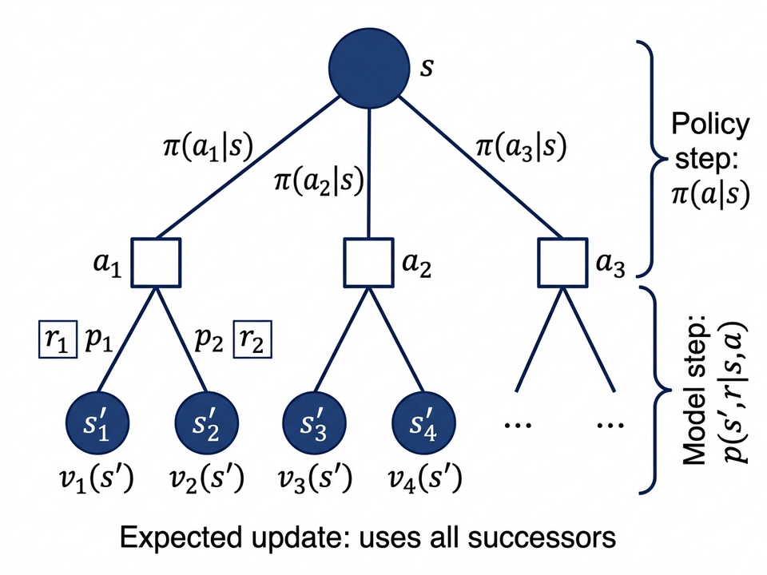
- New \(V(s)\) = immediate reward + discounted value of the next state
- Step 1: average over all actions using \(\pi(a \mid s)\)
- Step 2: average over all next states using \(p(s', r \mid s, a)\)
- MC and TD only sample one next state — DP uses all of them
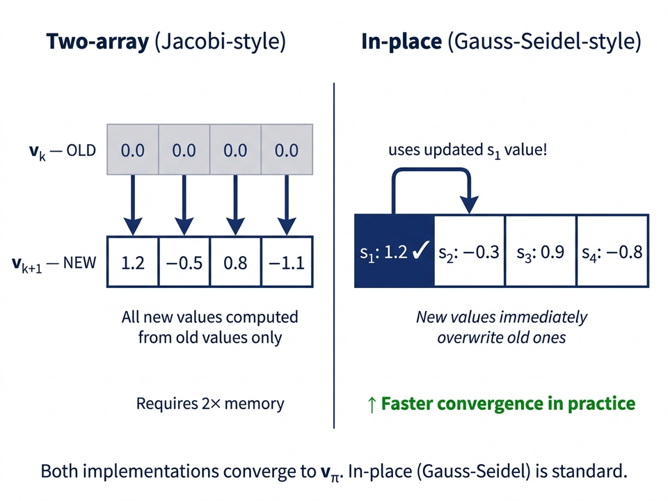
Part C — Algorithm & Examples
Input: π — policy to evaluate; θ > 0 — accuracy threshold
Init: V(s) ← 0 for all s ∈ S; V(terminal) ← 0
Loop:
Δ ← 0
For each s ∈ S:
v ← V(s)
V(s) ← Σ_a π(a|s) Σ_{s′,r} p(s′,r|s,a) [r + γ V(s′)]
Δ ← max(Δ, |v − V(s)|)
Until Δ < θ
Output: V ≈ v_π
- \(\Delta\): tracks the maximum change across all states in one sweep
- Stop when max change \(< \theta\) — policy evaluation is "good enough"

- Left column: value estimate \(v_k\) at steps \(k = 0,1,2,3,10,\infty\)
- Right column: the greedy policy built from \(v_k\)
- \(v_\infty(s)\) = negative of average steps to terminal under random \(\pi\)
- By \(k = 3\), the greedy policy is already optimal!
| T | −14 | −20 | −22 |
| −14 | −18 | −20 | −20 |
| −20 | −20 | −18 | −14 |
| −22 | −20 | −14 | T |
- Terminal states (T) have value 0
- Values = negative expected steps to terminal under random policy
- State adjacent to terminal: −14 | Far corner: −22 (hardest to escape)
- After one policy improvement step: all greedy actions point toward shorter paths
In the gridworld, state 11 is one step above the bottom-right terminal (terminal value = 0, \(\gamma = 1\), reward = −1 per step). What is \(q_\pi(11,\, \text{down})\)?
- A. \(0\) — the terminal state has value zero
- B. \(-14\) — the value of state 11 under the random policy
- C. \(-15\) — one step cost plus the value of state 11
- D. \(-1\) — one step cost, then reach terminal with value 0
↓ Press down to reveal the answer
In the gridworld, state 11 is one step above the bottom-right terminal (terminal value = 0, \(\gamma = 1\), reward = −1 per step). What is \(q_\pi(11,\, \text{down})\)?
- A. \(0\) — the terminal state has value zero
- B. \(-14\) — the value of state 11 under the random policy
- C. \(-15\) — one step cost plus the value of state 11
- D. \(-1\) — one step cost, then reach terminal with value 0
Part D — Policy Improvement
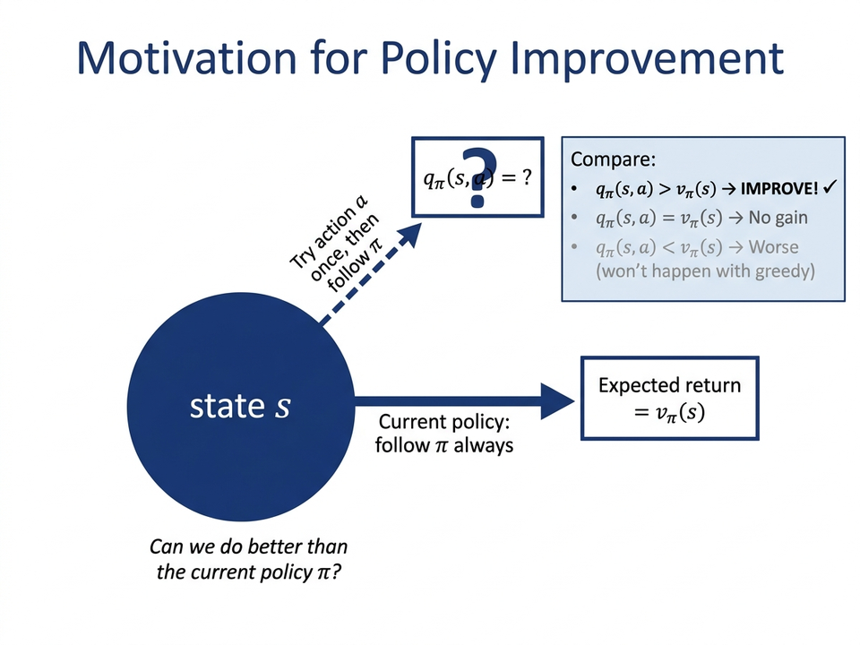
- We know \(v_\pi\) — how good policy \(\pi\) is from every state
- Question: should we change the action in state \(s\) to something else?
- Try: take action \(a\) once, then follow \(\pi\) — this gives value \(q_\pi(s, a)\)
- If \(q_\pi(s, a) > v_\pi(s)\), action \(a\) is better — we should switch!
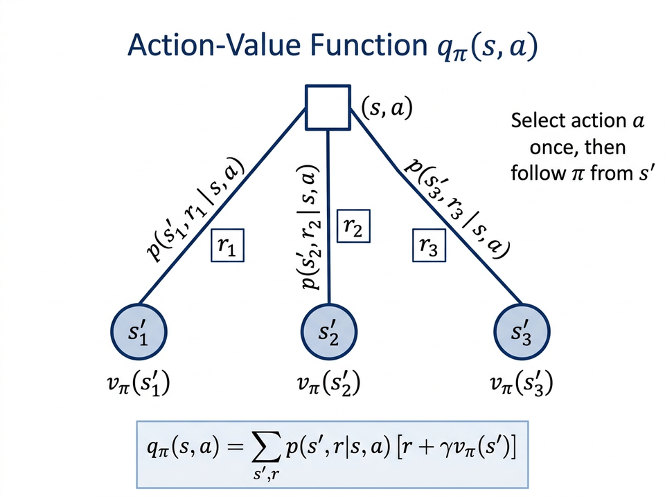
- Select action \(a\) in state \(s\) just once, then follow \(\pi\)
- Computable directly from \(v_\pi\) and the model \(p\)
- Key question: is \(q_\pi(s, a) > v_\pi(s)\)?
Let \(\pi\) and \(\pi'\) be deterministic policies such that for all \(s \in \mathcal{S}\): \[q_\pi(s, \pi'(s)) \geq v_\pi(s)\] Then \(\pi'\) obtains at least as much expected return from every state: \[v_{\pi'}(s) \geq v_\pi(s) \quad \text{for all } s \in \mathcal{S}\] If strict inequality holds at any state, then \(v_{\pi'}(s) > v_\pi(s)\) at that state.
- If \(\pi'\) beats \(\pi\) in one-step lookahead at every state…
- …then \(\pi'\) is globally better — higher total reward from every starting state
↓ Continue expanding... (press Down for conclusion)
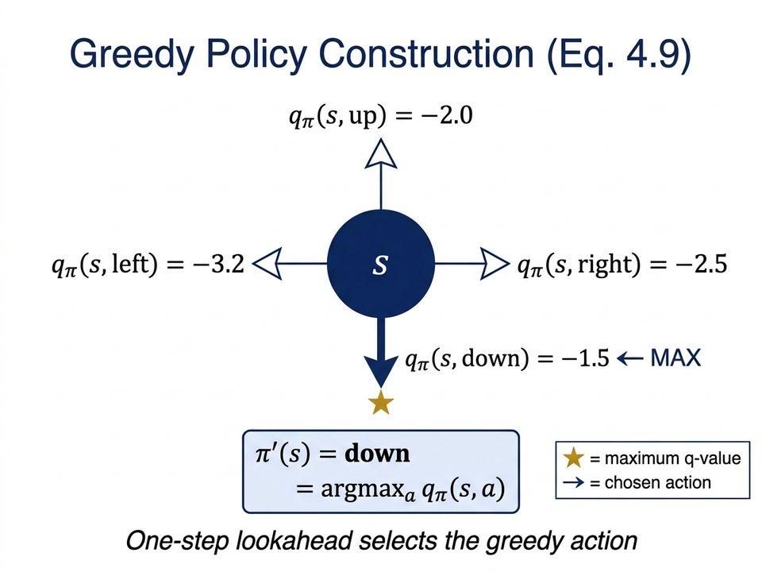
- For every state, pick the action with the highest one-step lookahead value
- This updates all states at once — the whole policy changes in one pass
- The new policy \(\pi'\) always satisfies the theorem condition — improvement is guaranteed
- If two actions tie, pick either one — both are equally good
Suppose new greedy policy \(\pi'\) is as good as but not strictly better than \(\pi\): \(v_{\pi'} = v_\pi\). Then:
\[v_{\pi'}(s) = \max_a \sum_{s',r} p(s',r \mid s,a)\Big[r + \gamma v_{\pi'}(s')\Big]\]Therefore \(v_{\pi'} = v_*\) and \(\pi' = \pi_*\) — the policy is already optimal.
- Improvement stops only when the current policy is already optimal
- A finite MDP has a limited number of policies — so convergence is always guaranteed
- The improvement theorem works for stochastic policies too
- Switching from random \(\pi\) to greedy \(\pi'\) is a huge jump in performance
- Under random \(\pi\): values reach \(-22\); under greedy \(\pi'\): values reach \(-3\) or better
- Multiple arrows at a cell = tied best actions (any one of them is fine)
In the iterative update for \(q_\pi\), which expression is used for the value at the next state \(s'\)?
- A. \(\max_{a'} Q(s', a')\) — take the best action in the next state
- B. \(V(s')\) — use the state-value directly, same as the \(v_\pi\) update
- C. \(\displaystyle\sum_{a'} \pi(a' \mid s')\, Q(s', a')\) — average over the policy's actions at \(s'\)
- D. \(Q(s', \pi(s'))\) — use only the action the policy would choose
↓ Press down to reveal the answer
In the iterative update for \(q_\pi\), which expression is used for the value at the next state \(s'\)?
- A. \(\max_{a'} Q(s', a')\) — take the best action in the next state
- B. \(V(s')\) — use the state-value directly, same as the \(v_\pi\) update
- C. \(\displaystyle\sum_{a'} \pi(a' \mid s')\, Q(s', a')\) — average over the policy's actions at \(s'\)
- D. \(Q(s', \pi(s'))\) — use only the action the policy would choose
Part E — Policy Iteration & Generalized Policy Iteration
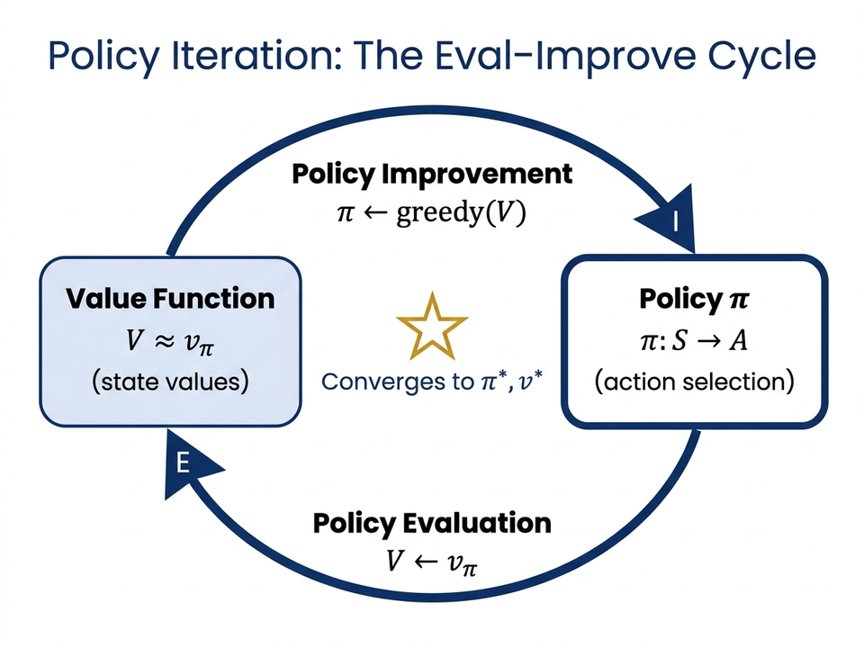
The monotone improvement sequence:
\[\pi_0 \xrightarrow{\;E\;} v_{\pi_0} \xrightarrow{\;I\;} \pi_1 \xrightarrow{\;E\;} v_{\pi_1} \xrightarrow{\;I\;} \pi_2 \xrightarrow{\;E\;} \cdots \xrightarrow{\;I\;} \pi_* \xrightarrow{\;E\;} v_*\]- Each policy strictly better than previous (or already optimal)
- Finite MDP: guaranteed convergence in finite steps
1. Init: V(s) ← 0, π(s) ← arbitrary ∀s; V(terminal) ← 0
2. Policy Evaluation:
Loop:
Δ ← 0
For each s ∈ S:
v ← V(s)
V(s) ← Σ_{s′,r} p(s′,r|s,π(s)) [r + γV(s′)]
Δ ← max(Δ, |v − V(s)|)
Until Δ < θ
3. Policy Improvement:
policy-stable ← true
For each s ∈ S:
old-action ← π(s)
π(s) ← argmax_a Σ_{s′,r} p(s′,r|s,a) [r + γV(s′)]
If old-action ≠ π(s): policy-stable ← false
If policy-stable → STOP; else go to step 2
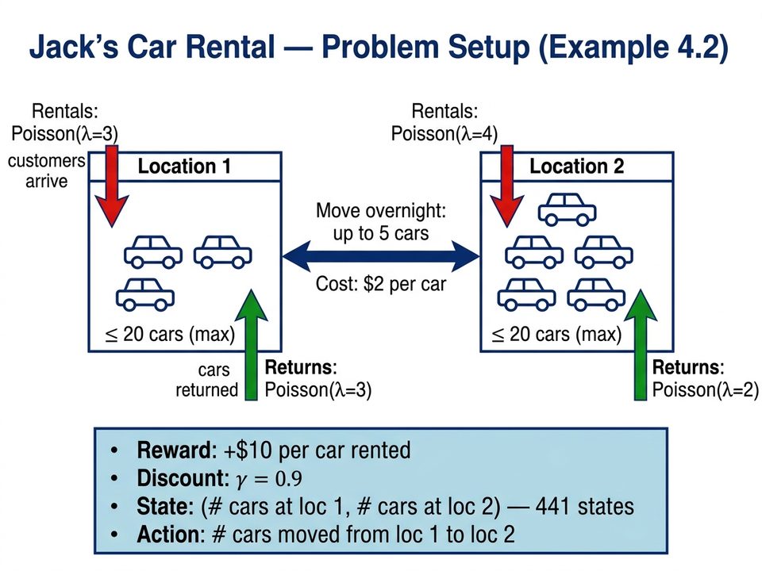
- State: (cars at loc 1, cars at loc 2) — up to 20 per location = 441 states
- Action: move up to 5 cars overnight; costs \$2 per car moved
- Reward: earn \$10 per car rented; rentals and returns follow Poisson distributions
- Discount \(\gamma = 0.9\); this is a continuing task (no fixed end)

- First 5 panels show policies \(\pi_0\) through \(\pi_4\) — each better than the last
- Color in each cell = number of cars to move from location 1 to location 2
- Last panel: the optimal value function \(v_*\) after convergence
- The 441-state problem reaches the optimal policy in just 4 iterations!
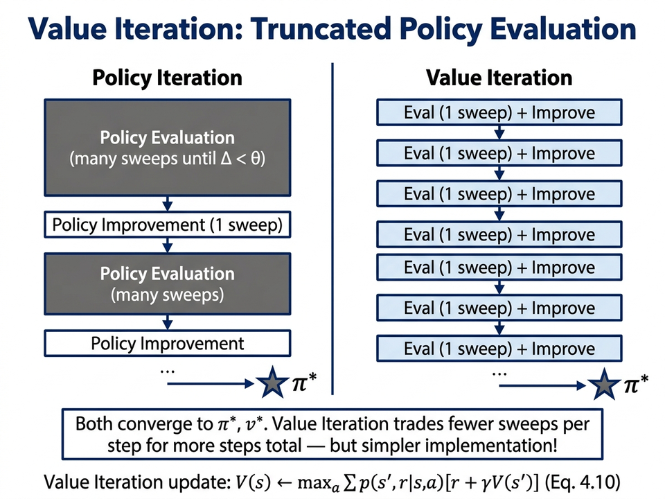
Key insight: greedy policies from \(v_k\) for \(k \geq 3\) were already optimal — no need to fully converge!
\[v_{k+1}(s) \doteq \max_a \sum_{s',r} p(s',r \mid s,a)\Big[r + \gamma v_k(s')\Big]\]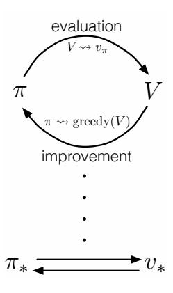
- Policy iteration: fully evaluate, then fully improve
- Value iteration: evaluate just one sweep, then improve
- Async DP: evaluate and improve one state at a time
- Almost all RL methods are some form of GPI!
- Policy Evaluation: find \(v_\pi\) by repeatedly applying the Bellman update
- Policy Improvement: build greedy \(\pi'\) from \(v_\pi\) — always at least as good as \(\pi\)
- Policy / Value Iteration: alternating eval and improve; both reach \(\pi_*\) in finite steps
- GPI: the unifying idea — all RL methods combine evaluation and improvement
- DP requires a complete model \(p(s', r \mid s, a)\) — often not available in practice
- Next — Monte Carlo: estimate \(v_\pi\) from real episodes; no model needed
- Then — TD learning: update from each step taken; no model, no waiting for episode end
- GPI still applies — these methods just do the evaluation step differently!
| Method | Needs Model? | Bootstraps? |
|---|---|---|
| Dynamic Programming | Yes ✓ | Yes |
| Monte Carlo | No | No |
| TD Learning | No | Yes |
When the transition model \(p(s', r \mid s, a)\) is not available, why is \(q_*\) more useful than \(v_*\) in practice?
- A. \(q_*\) always converges faster than \(v_*\)
- B. \(q_*\) requires less memory because it ignores some states
- C. The optimal policy can be read off directly: \(\pi_*(s) = \arg\max_a\, q_*(s, a)\) — no model needed
- D. \(q_*\) handles continuous action spaces better
↓ Press down to reveal the answer
When the transition model \(p(s', r \mid s, a)\) is not available, why is \(q_*\) more useful than \(v_*\) in practice?
- A. \(q_*\) always converges faster than \(v_*\)
- B. \(q_*\) requires less memory because it ignores some states
- C. The optimal policy can be read off directly: \(\pi_*(s) = \arg\max_a\, q_*(s, a)\) — no model needed
- D. \(q_*\) handles continuous action spaces better
Value iteration has just converged (\(\Delta < 0.001\)). What is the single step needed to get the optimal policy \(\pi_*\) from the converged \(V \approx v_*\)?
- A. Run one more full policy evaluation sweep to refine \(V\)
- B. For each state pick: \(\pi_*(s) = \arg\max_a \displaystyle\sum_{s',r} p(s',r \mid s,a)\bigl[r + \gamma V(s')\bigr]\)
- C. Average the last 10 value estimates to reduce noise before extracting the policy
- D. Start from the state with the highest value and follow greedy actions from there
↓ Press down to reveal the answer
Value iteration has just converged (\(\Delta < 0.001\)). What is the single step needed to get the optimal policy \(\pi_*\) from the converged \(V \approx v_*\)?
- A. Run one more full policy evaluation sweep to refine \(V\)
- B. For each state pick: \(\pi_*(s) = \arg\max_a \displaystyle\sum_{s',r} p(s',r \mid s,a)\bigl[r + \gamma V(s')\bigr]\)
- C. Average the last 10 value estimates to reduce noise before extracting the policy
- D. Start from the state with the highest value and follow greedy actions from there